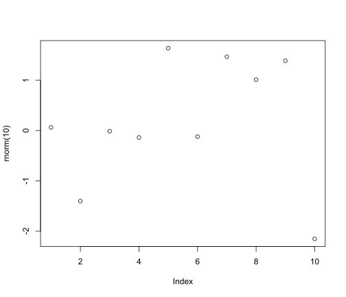

On latent cluster analyses in applied linguistics
correlational studies
research questions
I’ve been seeing more and more articles in applied linguistics that use clustering techniques to identify subgroups (often called ‘latent profiles’ or ‘latent classes’) of language learners on the basis of cognitive test or questionnaire data. Typically, the learners are then classified into clusters, and cluster membership is used as a predictor of a further outcome, such as performance on a language test. These studies have yet to convince me, first, that the problem they’re trying to solve is worth solving, and second, that they then actually solve it. My scepticism stems from a few conceptual issues with latent class/profile analysis (LCA/LPA) that these studies fail to address.
The setup
Figure 1 represents the setup that researchers using LCA or LPA (or some other variant of latent cluster analysis) assume, be it tacitly or explicitly. For learners \(i = 1, \dots, N\), we observe a vector of cognitive test or questionnaire scores \(\boldsymbol Y_i = (Y_{i1}, \dots, Y_{iK})\). We assume that these observations depend on a latent (i.e., not directly observed) categorical variable \(X_i \in \{1, \dots, C\}\), where \(C\) is a prespecified number of clusters. If \(X_i = c_i\), then this indicates that the \(i\)-th learner belongs to cluster \(c_i\). Finally, we assume that \(X_i\) may also influence some further outcome \(Z_i\), such as the learner’s performance or progress on a language test.
Figure 1 encodes a crucial assumption: conditional on \(X\), the variables \(Y_1, \dots, Y_K, Z\) are independent. In particular, this means that, once you know each learner’s value on \(X\), there is no information in the variables \(Y_1, \dots, Y_K\) that could help you better predict their value on \(Z\).
Incidentally, latent class analysis (LCA) refers to settings where the variables \(Y_1, \dots, Y_K\) are all categorical; if these variables are all continuous, latent profile analysis (LPA) is the preferred term. Variants exist that allow for a mix of categorical and continuous \(Y\) variables. For our purposes, the conceptual similarities between these approaches outweigh the differences.
When researchers apply LCA, LPA or some other variant, at least one of the following two goals is typically claimed to have motivated the study.
- To identify the clusters in the data. This usually involves figuring out how many clusters \(C\) there may be and characterising what learners ‘types’ or ‘profiles’ these correspond to.
- To investigate the relation between the clusters and the outcome. To this end, researchers try to reconstruct each learner’s cluster membership (call it \(\hat c_i\)) and use this to model \(Z\).
I’ve found both of these goals to be undermotivated in the applied linguistics literature, which is why I suggest researchers first address the questions I ask below before fitting LCA, LPA or whatever to their data.
Question 1: Are the clusters real?
Subquestion 1a: What are clusters, anyway?
Hennig 2015
Subquestion 1b: How well can your method detect the clusters so defined?
Including not hallucinating clusters that aren’t there. Stability?
An example
Chen et al.
Question 2: How useful are the clusters?
Now let’s assume that you’ve ensured that your definition of clusters agrees with your model’s definition of clusters and that you’re pretty confident that you’ll be able to identify the clusters from the data. What NOW?
Compare against the direct model
Compare the model \(Z \sim X\) to \(Z \sim Y\).